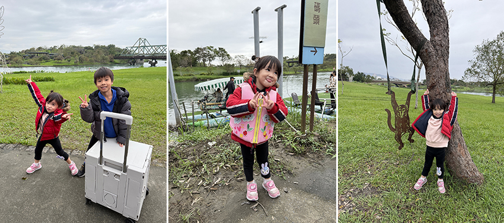
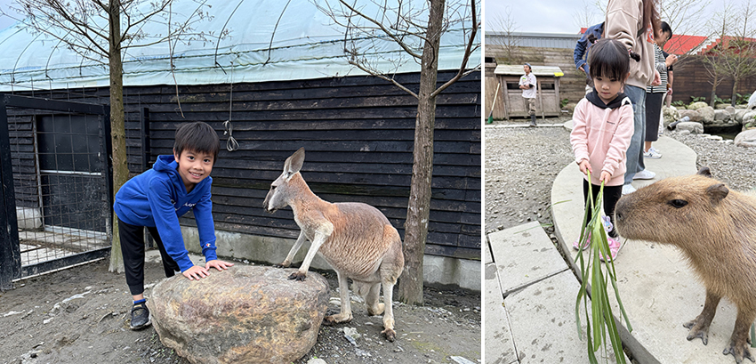
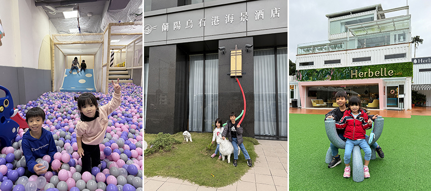

週末假期，我們規劃了一趟兩天一夜的親子小旅行，行程涵蓋綠意盎然的冬山河生態綠舟、充滿驚奇的蘭陽動植物王國，以及適合悠閒漫步的龍潭湖悠活園區，夜晚則入住擁有無敵海景的烏石港海景酒店，短短兩天，我們一家人在自然懷抱中留下了滿滿的歡笑與難忘回憶。
抵達宜蘭的第一站，我們來到了充滿自然氣息的冬山河生態綠舟，這裡宛如一座藏身城市中的綠色秘境，一下車，孩子們就被眼前廣闊的綠地和河道所吸引。整個園區空間寬敞、綠意盎然，這裡不僅僅是一座公園，更像是一個與自然共生的生態教室。我們漫步在園區內，欣賞著豐富多樣的植物，感受著微風的輕拂，孩子們在寬闊的草地上奔跑嬉戲，歡笑聲此起彼落，玩得不亦樂乎，登上園區內的觀景台，更能將整個生態綠舟的美景盡收眼底，視野遼闊、心曠神怡。最特別的是搭乘生態船遊河的體驗，隨著船隻緩緩前行，兩岸的景色美不勝收，船上的導覽人員也會介紹冬山河的歷史與生態，讓我們在欣賞美景的同時，也增長了知識。冬山河生態綠舟是一處讓人暫時忘卻城市喧囂、擁抱自然的好地方，無論大人或小孩都能在這裡找到屬於自己的樂趣。
|  |
午餐過後，我們來到充滿樂趣的蘭陽動植物王國，園區內聚集了許多超人氣的動物- 療癒系的水豚、呆萌可愛的綿羊與羊駝、悠閒緩慢的巨型陸龜，還有色彩繽紛的鸚鵡等。孩子們興奮地與這些小動物互動，開心地近距離餵食，樂在其中。最讓我們驚喜的是竟然在這裡看見了袋鼠，原以為袋鼠只能在澳洲或大型動物園裡見到，沒想到在蘭陽動植物王國就能近距離觀察牠們。袋鼠們自在地在園區裡跳來跳去，孩子們看得目不轉睛，還忍不住模仿牠們的模樣，一起蹦蹦跳跳，好不快樂。園區裡的小動物大多性情溫和、親人可愛，工作人員也會定時舉辦精彩的動物表演秀，一邊生動解說動物習性，一邊與觀眾互動。看著孩子們臉上洋溢著純真燦爛的笑容，這趟行程真是不虛此行。
|  |
傍晚時分，我們抵達今晚下榻的烏石港海景酒店，一踏進房間，映入眼簾的是一片蔚藍的海景，每間房都有獨立陽台，讓人能毫無遮掩地飽覽烏石港。晚餐我們在飯店內享用豐盛的自助餐，飯後孩子也在遊戲區玩得不亦樂乎，為旅程的第一天，畫下了溫馨又滿足的句點。第二天早晨，我們在海景的陪伴下醒來，享用了豐盛的早餐後，便前往龍潭湖悠活園區。
|  |
龍潭湖是宜蘭五大名湖之一，湖面遼闊，周圍群山環繞，景色宜人。悠活園區以龍潭湖為中心，規劃了環湖步道與觀景平台，其中最吸引人的，莫過於那一整排純白色的貨櫃屋，成為遊客爭相打卡的熱門景點。我們沿著環湖步道悠閒散步，欣賞著湖面倒映著青山綠樹的美景，享受著大自然的寧靜與美好，孩子們也精神奕奕地在步道上跑跳嬉戲。
這趟宜蘭親子之旅，雖沒有緊湊的行程安排，卻在每一個停留的片刻都讓人身心放鬆，讓孩子玩得開心，除了欣賞宜蘭豐富多樣的自然景觀，更重要的是，在這段共同探索的旅途中，我們彼此的情感也更加緊密，留下了無數珍貴的回憶，期待下一次的親子旅行，再次擁抱宜蘭的好山好水。